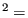
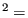

An important issue which frequently raises questions concerns units. Finite element
programs do not know any units. The user has to take care of that. In fact,
there is only one golden rule: the user must make sure that the numbers he
provides have consistent units. The number of units one
can freely choose depends on the application. For thermomechanical problems you
can choose four units, e.g. for length, mass, time and temperature. If these
are chosen, everything else is fixed. If you choose SI units for these
quantities, i.e. m for length, kg for mass, s for time and K for temperature,
force will be in
kgm s N, pressure will be
in
N
s N, pressure will be
in
N m kg
m kg ms
ms , density will be in
kg
, density will be in
kg m
m , thermal conductivity in
W
, thermal conductivity in
W mK J
mK J smK Nm
smK Nm smK kgm
smK kgm s
s mK kgm
mK kgm s
s K , specific heat in
J
K , specific heat in
J kgK Nm
kgK Nm kgK m
kgK m s
s K and so on. The density of steel in the SI
system is 7800
kg
K and so on. The density of steel in the SI
system is 7800
kg m
m .
.
If you choose mm for length, g for mass, s for time
and K for temperature, force will be in
gmm s
s and thermal conductivity in
gmm
and thermal conductivity in
gmm s
s K. In the
mmgsK system the density of steel is
since
kg
K. In the
mmgsK system the density of steel is
since
kg m g
m g mm
mm .
.
However, you can also choose other quantities as the independent ones. A
popular system at my company is mm for length, N for force,
s for time and K for temperature. Now, since force = mass
 length /
time
length /
time , we get that mass = force
, we get that mass = force  time
time /length. This leads to
Ns
/length. This leads to
Ns mm for the mass
and
Ns
mm for the mass
and
Ns mm
mm for density. This means that in the
mm N s K system the density of steel is
since
kg
for density. This means that in the
mm N s K system the density of steel is
since
kg m
m Ns
Ns m Ns
m Ns mm
mm .
.
Notice that your are not totally free in choosing the four basic units: you
cannot choose the unit of force, mass, length and time as basic units since
they are linked with each other through force = mass  length /
time
length /
time .
.
Finally, a couple of additional examples. Young's Modulus for steel is
N mm N
mm N m kg
m kg ms g
ms g mms
mms . So its value in the SI system is
. So its value in the SI system is
 , in the
mmgsK system it is also
, in the
mmgsK system it is also
 and in the
mm N s K
system it is
and in the
mm N s K
system it is
 . The heat capacity of steel is
J
. The heat capacity of steel is
J kgK m
kgK m s
s K
K mm
mm s
s K, so in the SI system it is , in the
mmgsK and
mm N s K system it is
.
K, so in the SI system it is , in the
mmgsK and
mm N s K system it is
.
Table 1 gives an overview of frequently used units in three different systems: the m kg s K system, the mm N s K system and the cm g s K system.
Typical values for air, water and steel at room temperature are: